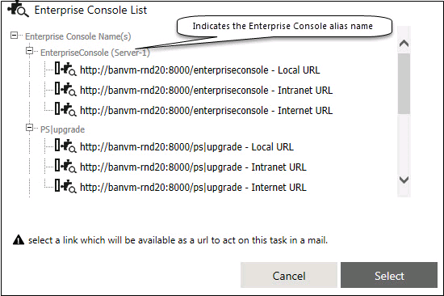
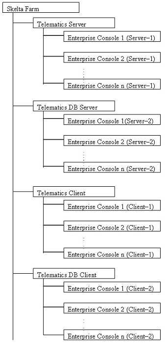
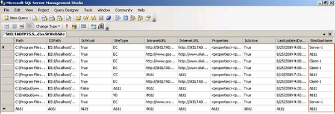
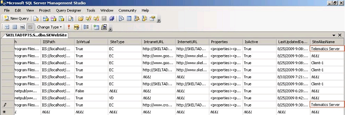
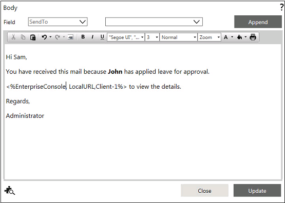

No
The Body property of all human activities has an EC plug-in. Click the Enterprise Console Explorer (plug-in) icon to get the required URL.
Note: This is applicable only if, Sent Notification Email property is set to Yes-HTML or Yes.
To compose the body text, perform the following steps:

In a client-server scenario, the Enterprise Console site name is same for the client and server web site. To differentiate the Enterprise console site name of the client and the server, the SiteAliasName column is used in the SKWebSite table.
Example: Assume that there are four machines: Telematics Server, Telematics DB Server, Telematics Client and Telematics DB Client.
Telematics Server is connected to the Farm and 'n' number of Enterprise Console sites are created on the Telematics Server machine. By default the machine will be named as 'Server-1'. Telematics DB Server is connected to the Farm and 'n' number of Enterprise Console sites are created on the Telematics DB Server machine. By default the machine will be named as 'Server-2' and so on.
Telematics Client is connected to the Farm and 'n' number of Enterprise Console sites are created on the Telematics Client machine. By default the machine will be named as 'Client-1'. Telematics DB Client is connected to the Farm and 'n' number of Enterprise Console sites are created on the Telematics DB Client machine. By default the machine will be named as 'Client-2' and so on.
The pictorial diagram of the above explanation is shown below.

How to change Enterprise Console Alias Name?
Before Changing

After changing the entry

After renaming the web site name, once again you need to reconfigure the Body property wherever this placeholder has been used in a workflows.
Note: If the workflow is imported from the other machine then make sure that the Enterprise Console name should be same while selecting URL in the EC plug-in window. If it is not the same then follow the steps instructed above to change the Enterprise Console site alias name.
